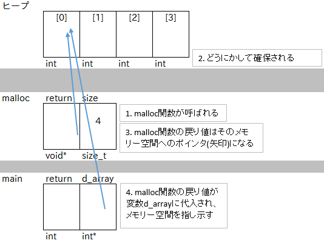
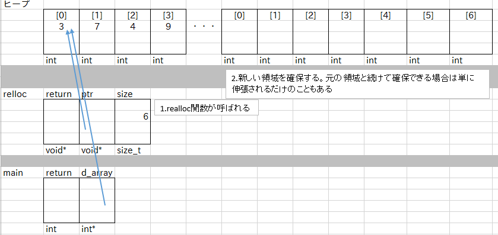
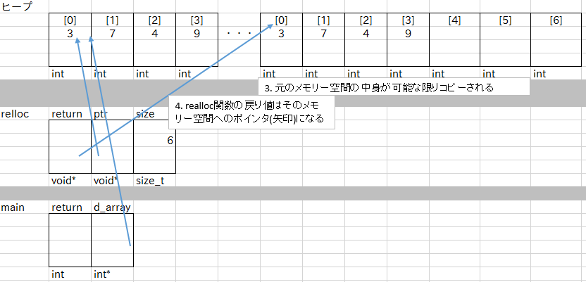
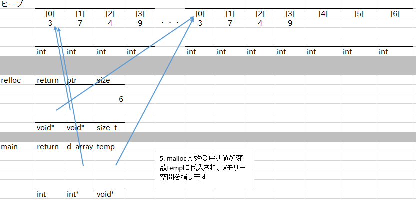
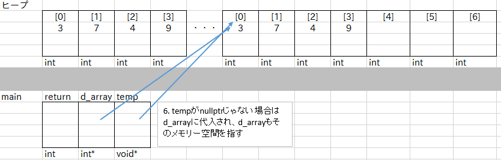

配列では要素数が固定でした。やっぱり途中で要素数を変更したいことは有りますよね。そして多くの場合要素数は可変でなければならない局面が多いです。
しかし、純粋な動的確保はほとんどやりません。なぜなら、自分で要素数を増やしたり減らしたりするコード書くのは面倒だからです。
C++のSTLにはこういうことをやってくれるコンテナ型がたくさんあり、それぞれ様々な特徴があります。
vector, list, forward_list#, deque, priority_queue,
set, multiset, unordered_set#, unordered_multiset#,
map, multimap, unordered_map#, unordered_multimap#,
array#, bitset, stack, queue
#：C++11で規格化
よく使うのはvector, unordered_map, deque, forward_list, listくらいかな。詳細は
[C++] STLの型の使い分け - Qiita
http://qiita.com/h_hiro_/items/a83a8fd2391d4a3f0e1c
しかし裏でどんなことやってるかわかっておく必要はあるので解説していきます。まあさっきさらっと使ったんですけどね。
これまで、変数はすべてスタック領域に確保してきました。今回はヒープ領域に確保していきます。違いとしては
というところでしょうか。まあ、"動的"確保というだけあって、確保するサイズを実行中に決められたり、途中で大きさを変えられるわけです。
まあ使ってみましょう。
$ ./d_array.exe d_arrayのアドレス:00911878 3, 7, 4, 9, d_arrayのアドレス:00911878 3, 7, 4, 9, -571263656, 54275, 9519592,
12行目のmalloc関数のイメージはこんなかんじです。
20行目のrealloc関数のイメージはこんな感じです。必ずしも別空間に再確保するわけではないようです。実行例の場合もそうだね。
   続いてもうちょい実用的な例を。とりあえず連結リストと呼ばれる物を作ってみましょう。目指すは蔵書管理システム。
なんか50行くらいで終わるはずだったんだけどちょっと長くなったな・・・。Cで文字列扱う気にはならなかったのでC++のstd::string、splitする都合上std::vectorを利用しています。説明？するする、そのうち。
自分でライブラリーでも作んない限りC++を使えばお世話になることはまず無いです。あとはC++のクラスのコンストラクタの中くらいか・・・？